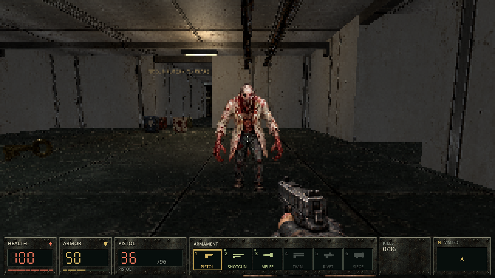
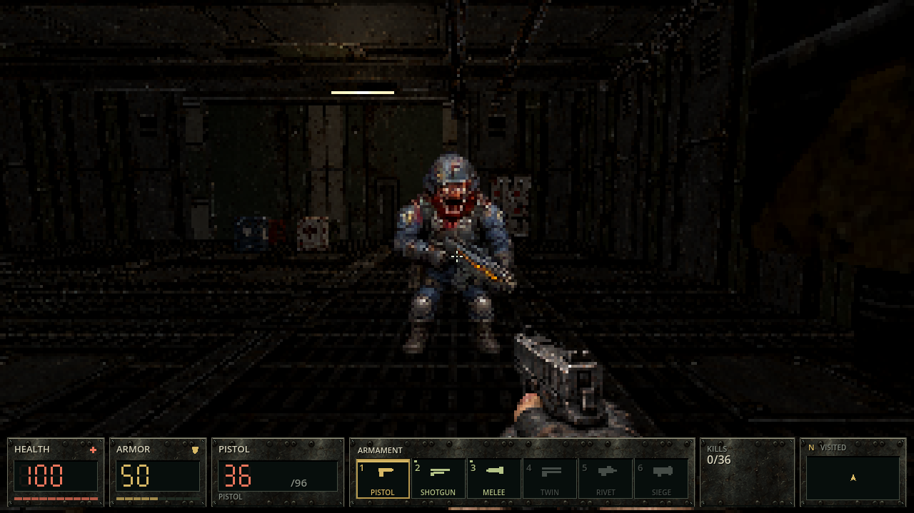
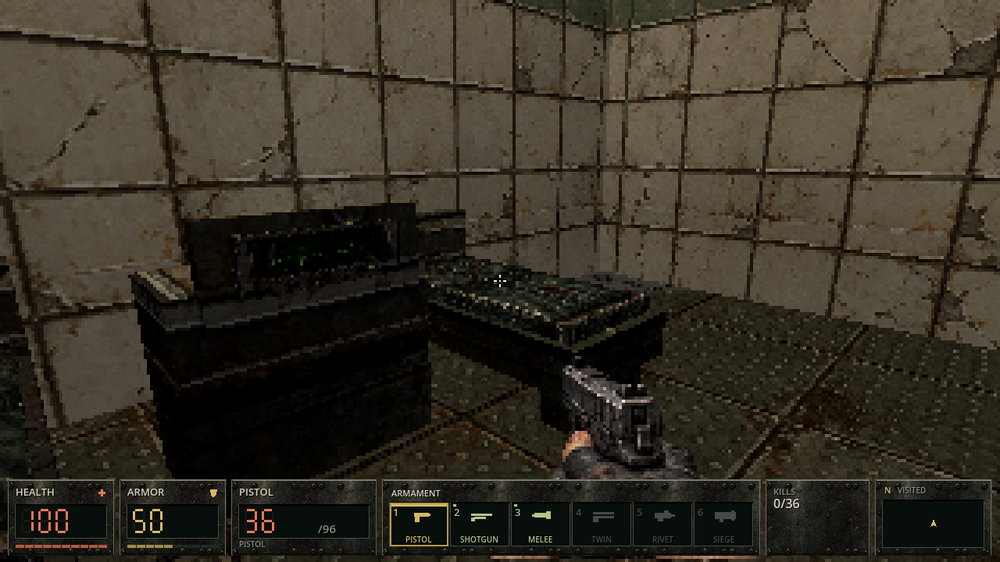
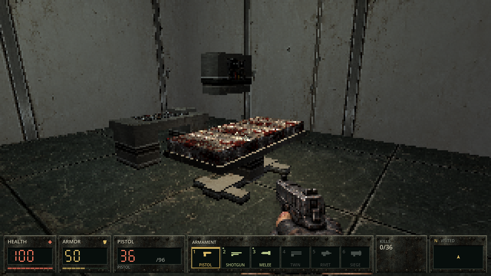
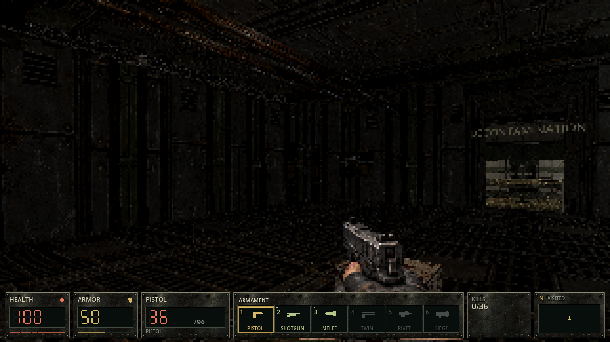
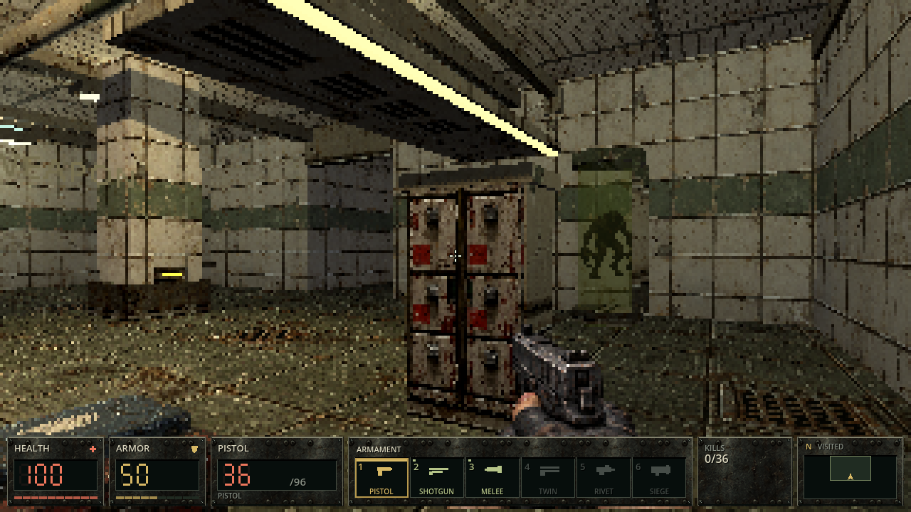

Four infected scientists and two security guards replace existing actors in their room roles. Scientists commit to a physical lunge; guards fire two-round projectile bursts. Hurt and death interrupt pending attacks. The current gunshots and music remain unchanged.
Visible mounted lights, dim service areas and limited mild damaged-light flicker. Disable “Damaged light flicker” in settings. These images are actual game renders with controlled cameras and frozen actors; room-only views hide enemies. They are not concept paintings or live combat captures.






First playable art pass: some directional attack angles need polish. Staff use the two existing demonic voice families. Additional pickup ambush waves, stronger gibbing and original per-level music remain later work.